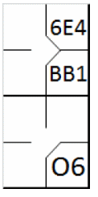
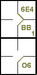
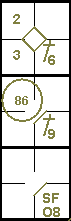
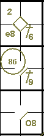
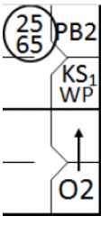

action { batter -> BB }
/* Le batteur suivant frappe une balle vers l'arrêt court qui récupère la balle et la relaie au défenseur de deuxième base pour retirer le coureur */
action { batter -> O6 , runner1 -> 64 }

L’abréviation « O » est généralement utilisée pour confirmer que l’avancement du frappeur-coureur vers la première base est dû au choix du joueur défensif d’éliminer un coureur précédent. Une condition essentielle est que, durant l'action, le coureur choisi ne soit éliminé ou sauvé que par une erreur.
En fait, l'expression « balle occupée » suit toujours une occasion de jeu en défense, que le résultat soit un retrait ou une erreur.
Le « O » pour « balle occupée » est suivi du numéro du joueur défensif qui, une fois la balle frappée récupérée, initie le jeu alternatif.
Exemple 52: Le « O6 » inscrit dans le carré de première base indique clairement que si l'arrêt-court avait joué pour le frappeur-coureur, il aurait certainement été éliminé.
| WBSC | Transcription dans l'outil de scorage | Outil |
|---|---|---|
|
|
/* le premier batteur gagne la première base un 'base on ball' */ action { batter -> BB } /* Le batteur suivant frappe une balle vers l'arrêt court qui récupère la balle et la relaie au défenseur de deuxième base pour retirer le coureur */ action { batter -> O6 , runner1 -> 64 } |
|
Exemple 53: Le coureur forcé atteint la deuxième base en toute sécurité grâce à une erreur de réception du défenseur de la deuxième base sur un lancer de l'arrêt-court. Dans les deux cas, la mention « balle occupée » est utilisée après une occasion de jeu.
| WBSC | Transcription dans l'outil de scorage | Outil |
|---|---|---|
|
 |
/* Le premier frappeur obtient la première base sur un « base sur balle ». */ action { batter -> BB } /* Le frappeur suivant envoie la balle vers l'arrêt-court, qui la rattrape et la lance au défenseur de la deuxième base pour éliminer le coureur. Le joueur de champ commet une erreur en laissant tomber la balle.*/ action { batter -> O6 , runner1 -> 6E4 } |
 |
Exemple 54:
Avec moins de deux retraits et des coureurs en première et troisième base, le troisième frappeur envoie une balle en
hauteur vers le champ centre, qui rate une prise facile.
Pendant que le coureur de tête marque, le joueur de champ extérieur récupère la balle et aide l'arrêt-court à éliminer
le coureur suivant, qui est forcé d'avancer à cause de l'erreur.
Puisque l'OBR 9.12(d)(4) stipule qu’aucune erreur n’est imputée lorsqu’un coureur est ensuite retiré, l’avancement du
frappeur-coureur vers la première base est enregistré comme une balle occupée.
Le sacrifice fly dans cet exemple indique que le point aurait été marqué même sans l'erreur du joueur de champ
extérieur.
| WBSC | Transcription dans l'outil de scorage | Outil |
|---|---|---|

|
/* Le premier frappeur réussit un coup sûr contre l'arrêt-court */ action { batter -> 1B6 } /* Le frappeur suivant frappe un simple au champ droit, le coureur avance de deux bases */ action { batter -> 1B9 , runner1 -> ++ } /* Le frappeur suivant envoie une balle en hauteur au champ centre, mais le défenseur commet une erreur. Le joueur de champ la récupère et la renvoie pour éliminer le coureur qui arrivait de la deuxième base. Le coureur en troisième base marque le point */ action { batter -> SFO8 , runner1 -> 86 , runner3 -> + } |
 |
Ce n'est pas le cas pour le Exemple 55: L'absence de toute mention du sacrifice fly et l'erreur concernant l'arrivée au marbre démontrent clairement que, sans cette erreur, aucun point n'aurait été marqué. [OBR 9.12].
| WBSC | Transcription dans l'outil de scorage | Outil |
|---|---|---|

|
/* e premier frappeur réussit un coup sûr contre l'arrêt-court */ action { batter -> 1B6 } /* Le frappeur suivant frappe un simple au champ droit, le coureur avance de deux bases */ action { batter -> 1B9 , runner1 -> ++ } /* Le frappeur suivant envoie une balle en hauteur au champ centre, mais défenseur commet une erreur. Le joueur de champ récupère la balle et la renvoie pour éliminer le coureur arrivant de la deuxième base. Le coureur en troisième base marque le point. */ action { batter -> O8 , runner1 -> 86 , runner3 -> e8 } |
 |
Exemple 56:
Sans aucun retrait et avec les bases pleines, le défenseur de la troisième base récupère la balle frappée au sol par
le quatrième frappeur et, après avoir touché sa base, aide le défenseur de la deuxième base à conclure le double jeu.
L’avancée du frappeur-coureur vers la première base est indiquée par le symbole « balle occupée », ainsi que par
« GDP » pour un double jeu.
L’avance du premier coureur est parfaitement légale, même si le point ne peut pas être comptabilisé comme ayant été
marqué.
| WBSC | Transcription dans l'outil de scorage | Outil |
|---|---|---|

|
/* Le premier frappeur atteint la base sur un lancer fou. */ action { batter -> KSWP } /* Le frappeur suivant frappe un simple au lanceur, le coureur avance. */ action { batter -> 1B1 , runner1 -> + } /* Le frappeur suivant atteint la première base sur un 'base on ball', les coureurs avancent. */ action { batter -> BB , runner1 -> + , runner2 -> + } /* Le frappeur suivant frappe une balle au sol vers la troisième base, qui touche le sol. Il lance ensuite la balle au défenseur de la deuxième base, qui élimine le coureur arrivant de la première base. Le coureur en troisième base en profite pour marquer.*/ action { batter -> GDPO5 , runner1 -> 54 , runner2 -> 5 , runner3 -> + } |

|
Exemple 57:
Le coureur-frappeur, après avoir atteint la première base sur un choix du défenseur, profite du jeu de poursuite en
cours pour continuer jusqu'en deuxième base.
Cette avancée supplémentaire est indiquée par une flèche.
| WBSC | Transcription dans l'outil de scorage | Outil |
|---|---|---|
|
 |
/* Le premier frappeur atteint la première base sur un lancer fou. */ action { batter -> KSWP } /* Le coureur profite d'une balle passée pour avancer jusqu'en deuxième base. */ action { runner1 -> PB } /* Le frappeur envoie la balle au receveur, qui la transmet au défenseur de la troisième base pour éliminer le coureur ; une souricière élimine le coureur.*/ action { batter -> O2+ , runner2 -> 2565 } |

|
Dans les exemples précédents, le symbole de la « balle occupée » n'a été utilisé que pour représenter l'avancée d'un coureur-frappeur jusqu'en première base. Nous allons maintenant examiner comment il peut être utilisé pour représenter les avancées des coureurs.
Exemple 58:
Le premier frappeur atteint la base grâce à une mauvaise réception d'un joueur de champ extérieur, et est forcé
d'avancer en deuxième base lorsque le frappeur suivant frappe un simple.
Sur une balle frappée par le troisième frappeur, l'arrêt-court aide le défenseur de la troisième base à éliminer le
premier coureur.
Dans ce cas également, le déroulement de l'action a permis au scoreur d'affirmer avec certitude que le défenseur
aurait pu éliminer le coureur forcé en deuxième base, plutôt que le premier coureur. C'est pourquoi l'avancement du coureur
en deuxième base est comptabilisé comme un choix du défenseur, et non avec le numéro du frappeur dans l'ordre de passage au
bâton.
| WBSC | Transcription dans l'outil de scorage | Outil |
|---|---|---|

|
/* Le premier frappeur envoie la balle au champ centre, le défenseur fait une erreur et la rattrape. */ action { batter -> E8F } /* Le frappeur suivant réussit un coup sûr en deuxième base, le coureur avance.*/ action { batter -> 1B4 , runner1 -> + } /* Le frappeur suivant envoie la balle à l'arrêt-court, qui la transmet au défenseur de la troisième base. Ce dernier élimine alors le coureur arrivant de la deuxième base. Le coureur en première base et le frappeur profitent de l'occasion pour avancer.*/ action { batter -> O6 , runner1 -> O6 , runner2 -> 65 } |

|
Il existe un autre type de balle occupée, comme dans « KO2 ».
Exemple 59:
Avec des coureurs en deuxième et troisième base, le receveur laisse tomber la troisième prise mais la récupère à
temps pour aider le lanceur à éliminer le coureur qui vient de quitter la troisième base.
Le frappeur-coureur arrive en toute sécurité en première base, comme indiqué par « KS1 O2 » (en supposant qu'il s'agit
du premier retrait sur trois prises pour le lanceur actuel).
L'avance du coureur en deuxième base est notée avec « O2 » comme décrit dans le commentaire de la règle 9.13(b).
| WBSC | Transcription dans l'outil de scorage | Outil |
|---|---|---|

|
/* Le premier frappeur réussit un double au champ droit. */ action { batter -> 2B9 } /* Le frappeur suivant frappe un simple au champ gauche et profite d'un relais pour atteindre la deuxième base; le coureur en deuxième avance */ action { batter -> 1B7 T75 , runner2 -> + } /* Le frappeur suivant, sur une troisième prise relâchée, obtient la première base car le receveur décide d'éliminer le coureur venant de la troisième base.*/ action { batter -> KSO2 , runner2 -> O2 , runner3 -> 21 } |

|
Exemple 60:
Le frappeur envoie une balle au sol vers la troisième base, qui touche le coureur en troisième base alors qu'il
tente de toucher la base.
Lors de cette action, la balle est échappée et l'arbitre annonce « Balle au sol ». Le coureur en troisième base
retourne sain et sauf à sa base et le défenseur de la troisième base commet une erreur. Cette erreur est décisive et doit
être inscrite en petits caractères dans le carré de troisième base.
| WBSC | Transcription dans l'outil de scorage | Outil |
|---|---|---|

|
/* Le premier frappeur réussit un triple au champ droit. */ action { batter -> 3B8 } /* Le frappeur suivant envoie la balle en troisième base ; le défenseur aurait dû éliminer le coureur qui ne bougeait pas.*/ action { batter -> O5 , noAdvance on runner3 -> E5 } |

|
Ce type d'erreur se rencontrera toujours en troisième ou deuxième base, et ne doit pas être confondu avec une erreur qui prolonge le temps passé au bâton qui, bien qu'enregistrée de la même manière, est inscrite dans la case de la première base.
ATTENTION: Pour comptabiliser l’avancement d’un coureur sur un choix du défenseur plutôt que sur un coup sûr, le marqueur doit être absolument convaincu qu’une autre action sur ce joueur aurait conduit à son élimination.